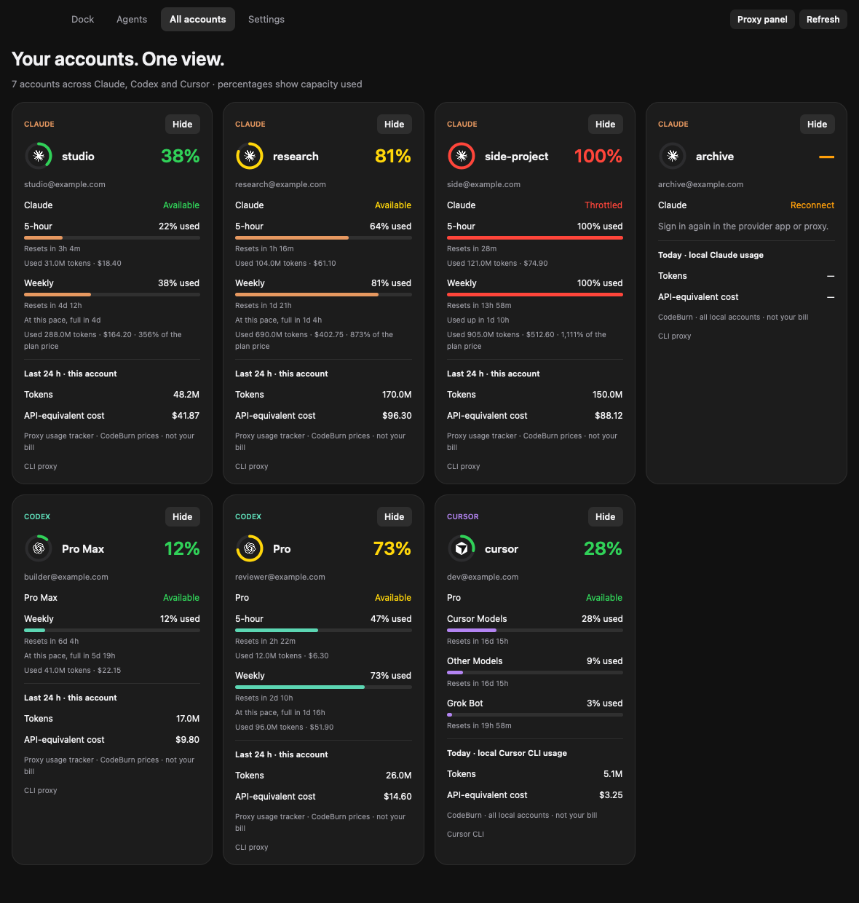
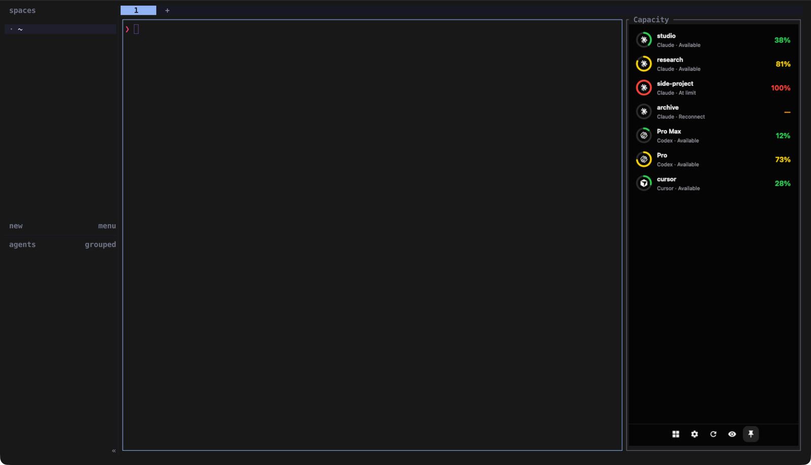
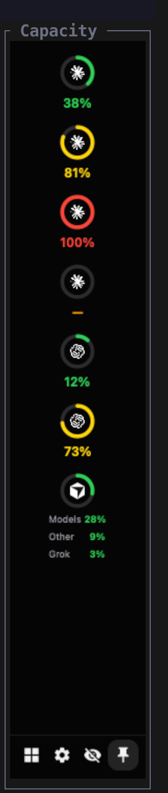
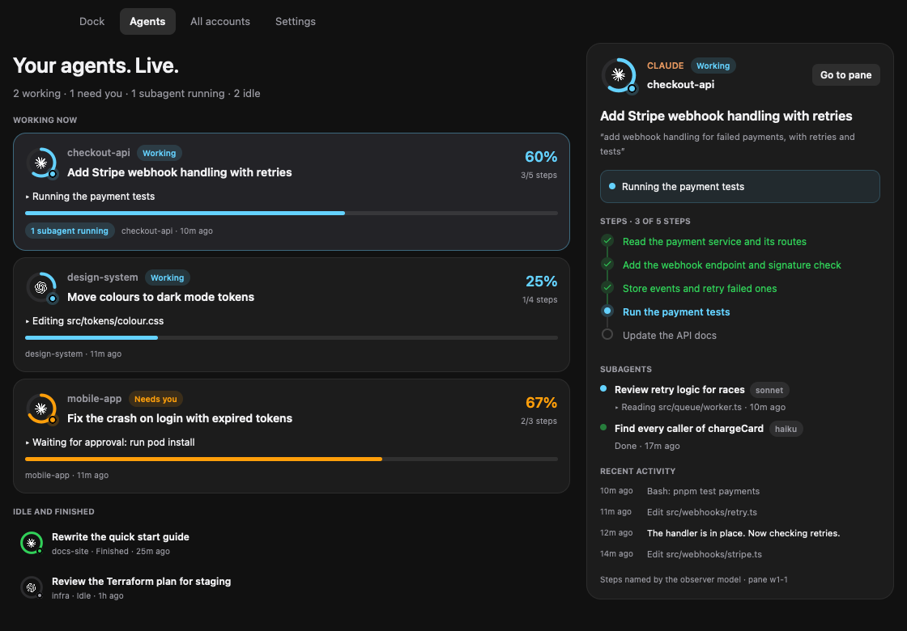

Every AI account's capacity, one glance away
A dock that shows how much of each quota you have used, when it resets, and what today's work cost. It reads your accounts locally and never routes your prompts.
- Claude
- Codex
- Cursor
Hover the dock on the right edge, just like the app.Tap an account in the dock below, just like the app.

See it in 30 seconds
Rings fill as you use each quota, turn red at the limit and count down to the reset. The film uses demo accounts.
All accounts, one view
Rings turn yellow at 70%, orange at 85% and red at the limit. Every card shows each quota window, its reset time and today's local token use.
Quota rings
Percent used on the tightest window: 5-hour, weekly or per model. Exhausted and disconnected accounts stay visible.
Cost on hover
Today's tokens and API-equivalent cost from CodeBurn, with input, output and cache counts.
Manage accounts
Hide an account from Mako, or delete its login from the proxy after a confirmation.
Local or remote proxy
Use CLIProxyAPI in Docker on this machine, or point Mako at a server with its address and key.
Your layout
Dock on any screen edge, scale it, round or square icons, labels on or off.
Smarter routing
Mako writes quota readings for the Expiring First proxy plugin, so requests use the quota that resets soonest.
Private by design
Credentials stay with your proxy. The snapshot Mako keeps holds no tokens.
Download
Version 1.0.0. Each build needs Python 3.9 or newer. Add accounts with CLIProxyAPI; the install steps below set it up.
Windows and Linux are untested by hand. They build and pass the automated checks, but nobody has used them on a real machine yet. Hands-on testing is on the roadmap. Report a problem.
The macOS app is not notarised. Open the disk image and drag the app to Applications. Then run this once, or right-click the app and choose Open:
xattr -dr com.apple.quarantine "/Applications/Mako Capacity.app"Install with the setup CLI
The CLI builds the app, installs CodeBurn and starts CLIProxyAPI in Docker. Prerequisites: Git, Python 3.9+, Node.js 22.13+ and Docker with Compose v2.
macOS and Linux
git clone https://github.com/Mako-L/account-capacity-dock.git
cd account-capacity-dock
./capacity installWindows PowerShell
git clone https://github.com/Mako-L/account-capacity-dock.git
cd account-capacity-dock
.\capacity.cmd installAdd your accounts
mako-capacity login claude # repeat per account
mako-capacity login codex
mako-capacity login cursorProxy on another machine
mako-capacity proxy https://server:8317 --key KEY
# or, for a new install without Docker:
./capacity install --proxy-url https://server:8317 --key KEYInstall with an AI assistant
Paste this prompt into Claude Code, Codex, Cursor or another assistant that can run commands. It checks what you have, asks how your proxy runs, and walks you through each step.
Help me install Mako Capacity (https://github.com/Mako-L/account-capacity-dock) on this computer.
1. Check what I have: operating system and version, Git, Python 3.9+, Node.js 22.13+, and Docker with Compose v2 (running). On Windows and Linux, also check for the Rust toolchain. Tell me what is missing and how to install it. Wait for my yes before you install anything system-wide.
2. Ask me where my CLIProxyAPI runs: in Docker on this machine, already running on this machine, or on another server.
3. Clone the repository and follow its README for my answer:
- Docker on this machine: ./capacity install (Windows: .\capacity.cmd install)
- Proxy already running here: ./capacity install --app-only
- Proxy on another server: ./capacity install --proxy-url URL --key KEY (ask me for both)
4. Help me add accounts with: mako-capacity login claude, login codex and login cursor. I complete each browser sign-in myself.
5. If I use Herdr, install the widget: herdr plugin install Mako-L/account-capacity-dock/herdr-plugin
6. If my proxy has the Expiring First plugin, point its quota_file at Mako's quota.json, as the README describes.
7. Check that it works: run mako-capacity doctor, and confirm the dock shows my accounts.
Never print, paste or commit tokens, keys, or files from the proxy's auths folder. Ask me before any command that deletes data or restarts Docker containers.In your terminal, with Herdr
The Herdr widget docks beside your panes. In a narrow pane it shows a column of rings, and wider it shows a row per account. Press the pin button, and it follows you to every tab. The eye button hides account names, so you can share your screen.

herdr plugin install Mako-L/account-capacity-dock/herdr-plugin
herdr plugin action invoke pin-app-right --plugin mako-capacityThe rings need a terminal with the Kitty graphics protocol, such as Ghostty, Kitty or WezTerm, and kitty_graphics = true in Herdr's config. Over SSH, the terminal you type in draws them.

Your agents, live
A second widget shows every Claude Code and Codex session: the task, the step it is on, its progress and its subagents. Hover over an agent to see its steps as a timeline. Steps come from the agent's own task list, from a one-line report the agent writes, or from a small observer model that reads its latest events.

herdr plugin action invoke pin-agents-right --plugin mako-capacity
mako-capacity agents report "Run the tests" --done 2 --total 5